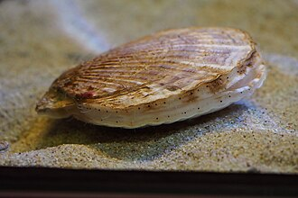

養殖ほたて貝の生産量 都道府県ランキング
全4都道府県の順位と収獲量
養殖ほたて貝の収獲量が全国で最も多いのは北海道で、8万4,508 tです。全国（11万9,450 t）の71%を占めます。

| 順位 | 都道府県 | 収獲量 | 全国に占める割合 |
|---|---|---|---|
| 1位 | 北海道 | 8万4,508 t | 71% |
| 2位 | 青森県 | 3万1,263 t | 26% |
| 3位 | 宮城県 | 3,057 t | 2.6% |
| 4位 | 岩手県 | 622 t | 0.5% |
PR

養殖ほたて貝の生産量の推移（令和2年〜令和6年）
全国の収獲量は、令和2年の14万9,061 tから令和6年の11万9,450 tへ、20%減りました。1位は入れ替わっています（令和2年は青森県、令和4年は北海道）。
| 年 | 全国 | 1位 | 2位 | 3位 |
|---|---|---|---|---|
| 令和6年 | 11万9,450 t | 北海道8万4,508 t | 青森県3万1,263 t | 宮城県3,057 t |
| 令和5年 | 15万1,311 t | 北海道8万7,264 t | 青森県5万6,258 t | 宮城県6,031 t |
| 令和4年 | 17万2,078 t | 北海道8万5,492 t | 青森県7万7,882 t | 宮城県6,828 t |
| 令和3年 | 16万4,511 t | 青森県7万8,552 t | 北海道7万6,348 t | 宮城県7,335 t |
| 令和2年 | 14万9,061 t | 青森県8万164 t | 北海道6万1,313 t | 宮城県6,185 t |
この数字について
- 分類：貝の仲間
- 全国の収獲量：11万9,450 t
- この数字が表すもの：収獲量（養殖による収獲量）
- 調査：海面漁業生産統計調査（海面養殖業） 令和6年
- この品目は養殖の統計です。
- 4県分を調査（調査していない県は順位に入りません）
養殖ほたて貝の生産量について、よくある質問
- 養殖ほたて貝の生産量が日本一の都道府県はどこですか？
- 北海道です。海面漁業生産統計調査（海面養殖業）（令和6年）で8万4,508 tでした。
- 養殖ほたて貝の生産量ランキング2位・3位はどこですか？
- 2位は青森県（3万1,263 t）、3位は宮城県（3,057 t）です。
- 養殖ほたて貝の生産量ランキング4位はどこですか？
- 4位は岩手県（622 t）です。養殖ほたて貝の全4県の順位は上の表のとおりです。
- 養殖ほたて貝の全国の生産量はどれくらいですか？
- 11万9,450 t（令和6年）です。